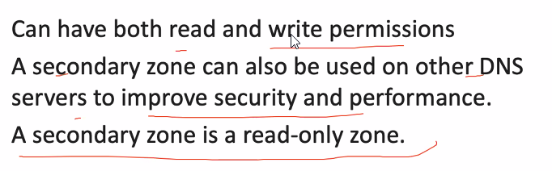

A
DNS zone is used to host the
DNS records for a particular domain.
--------------------------------------------------------------------------------------
Primary and Seconday Zones- Primary Zone --> primary server
- Seconday Zone --> backup

--------------------------------------------------------------------------------------
Stub Zone

--------------------------------------------------------------------------------------
DNS & Active Directory